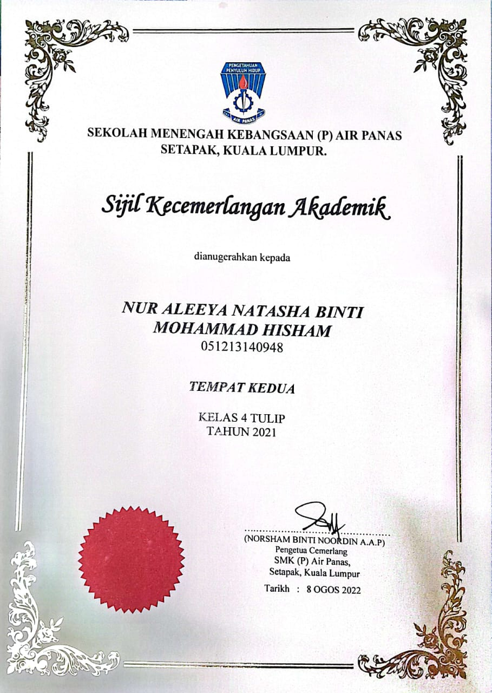
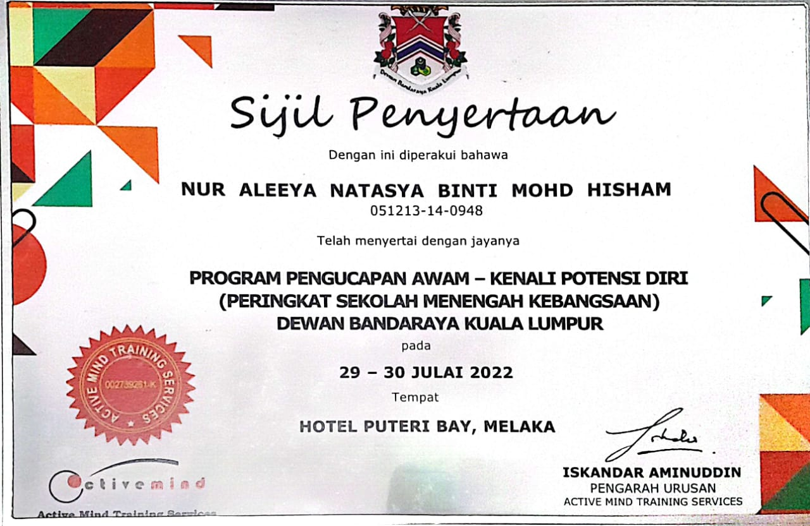
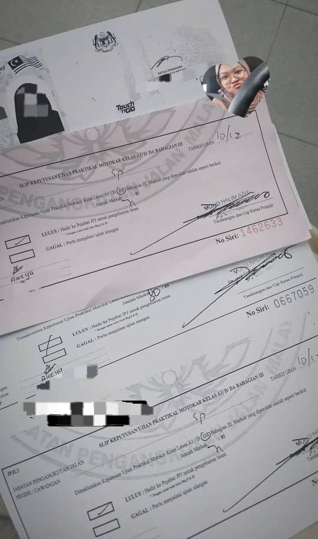

|
🌸 Class Monitor RecognitionServed as the class monitor for Form 5 Tulip (2022–2023). Successfully carried out leadership duties, managed class matters, and supported my classmates, all while juggling the pressure of SPM. It was truly exhausting 😮💨, but it taught me valuable lessons in resilience, time management, and leading with heart. Despite the challenges, it became one of my most meaningful memories, and I felt truly appreciated. |
|  |
🥈 Academic Achievement – 4 TulipAlhamdulillah, I secured 2nd place in my class, Form 4 Tulip. Even though it wasn’t 1st place, I’m still incredibly grateful 🤍. It felt amazing to be recognized on stage. A reminder that every effort counts, and every step is worth celebrating |
|  |
🎤 Public Speaking Program – SPM 2022Received a participation certificate for joining a Public Speaking Program during SPM, held at Hotel Bay, Melaka. The experience helped boost my confidence 🌟, improved my communication skills, and gave me the chance to meet amazing new friends from different schools 🤝. Truly a moment of personal growth and connection! . |
|  |
🚗 Passed My Driving Test – A Dream Come TrueHonestly, I still can’t believe I passed my driving test! This has been a dream of mine since I was a kid. If 10-year-old me could see 20-year-old me behind the wheel today, she'd be screaming with joy. I'm beyond proud of this milestone because it reminds me that with patience (and a lot of practice!), dreams really do come true. |